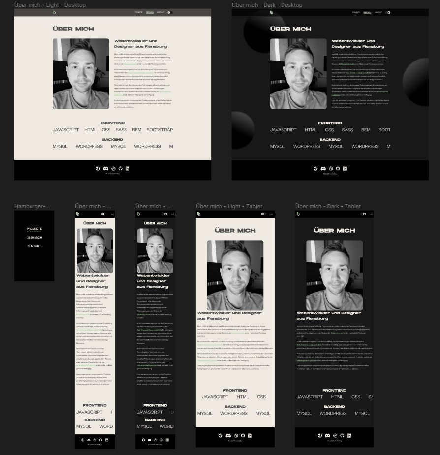
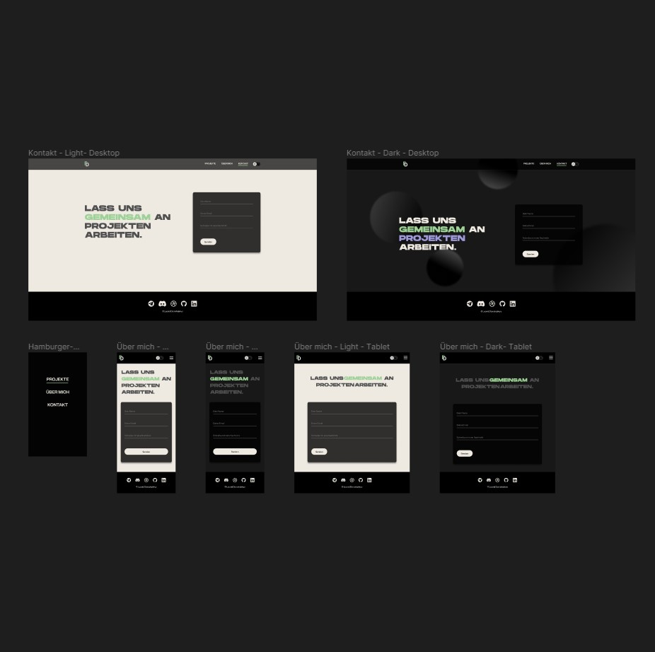
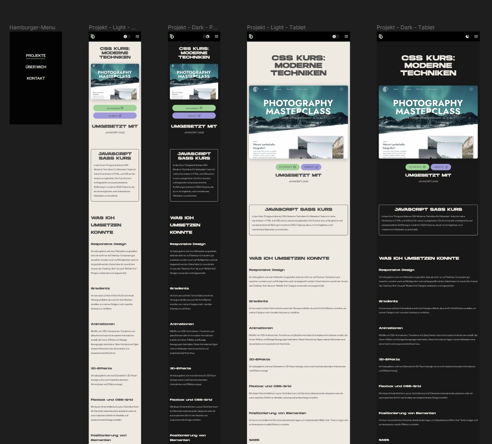
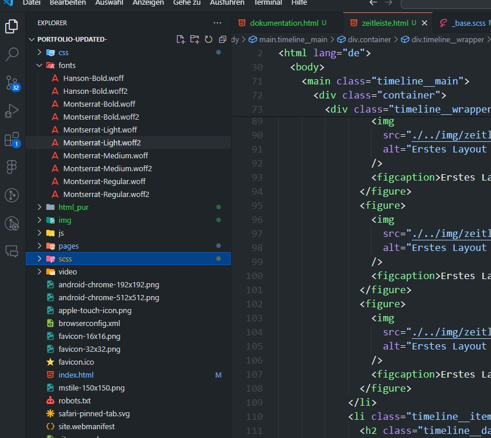
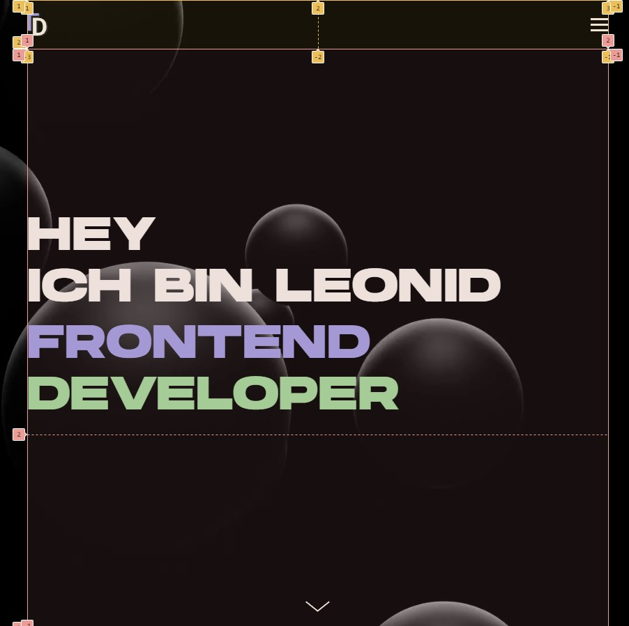
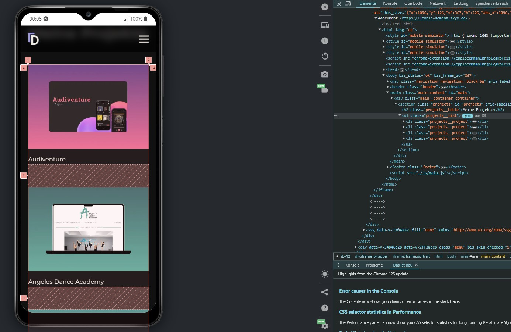

Erstes Layout der Startseite mit Grundstruktur und Farbwahl im
Light- und Darkmode für Smartphone, Tablet, und Desktop
Aulösungen.

Erstes Layout von der Über mich Seite.

Erstes Layout von der Kontakt Seite.

Erstes Layout von der Projekte Seite.
– Typografie

Auswahl und Integration von Schriftarten. Wir haben die
Schriftarten "Hanson" und "Montserrat" als @font-face in die
CSS-Datei eingebunden.
Implementierung von Reset CSS und CSS-Variablen. Wir haben
zunächst ein Reset-CSS eingeführt, um eine konsistente Basis
für alle Browser zu schaffen. Anschließend wurden
CSS-Variablen definiert, um Farben, Schriftgrößen und Abstände
zentral zu verwalten und eine einfache Wartung und Anpassung
des Designs zu ermöglichen.

Erste Implementierung des Layouts und der Navigation. Wir
haben die Grundstruktur der Webseite erstellt, inklusive
Hauptnavigation, Header und Hauptinhaltsbereich. Die
Entwicklung begann mit der mobilen Auflösung und wurde für
größere Bildschirme erweitert. Dabei kam CSS Grid zum Einsatz,
um eine flexible und anpassungsfähige Struktur zu
gewährleisten.
10.02.2024 – Umsetzung des Hauptinhalts

Umsetzung des Mainbereichs. Wie bereits im Header, haben wir
den Mainbereich mit mobile first entwickelt und anschließend
für größere Bildschirme erweitert. Dabei kam erneut CSS Grid
zum Einsatz.
Implementierung des Footers. Die Grundstruktur des Footers
wurde mit CSS Grid erstellt. Anschließend wurden die Listen
innerhalb des Footers mit Flexbox gestaltet.